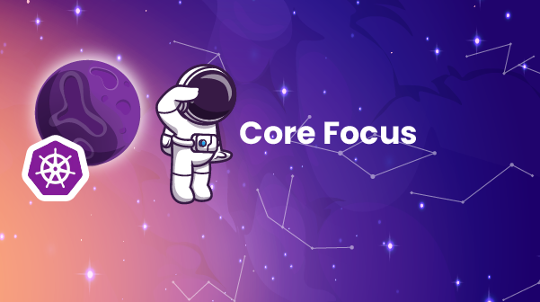

CLOUDLABS ADVENTURE
Vision World

V/TO



Core Focus
It serves as a source of strategic clarity and offers guidance for decision-making in the pursuit of lasting success.
10 year Target
Marketing Strategy
Then, you must define three unique qualities; these are the aspects that distinguish the company and make it stand out.
Now is the time to review the company's current established process and check if it needs to be updated. Remember that this is the proven way to deliver the product or service to customers. It should be consistent and produce the same results each time. This process should encompass every step, from the initial customer interaction to follow-ups and the delivery of the product or service.
The fourth and final component of the marketing strategy is the warranty. You need to determine what customers can expect from CloudLabs. Check if the V/TO warranty is accurate or if an upgrade is required.
Finally